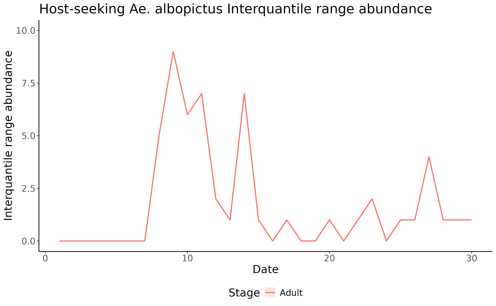

vignettes/dynamAedes_04_uncompModel.Rmd
dynamAedes_04_uncompModel.RmdThis tutorial explains step-by-step the main features of dynamAedes package, a unified modelling framework for invasive Aedes mosquitoes. Users can apply the stochastic, time-discrete and spatially-explicit population dynamical model initially developed in Da Re et al., (2021) for Aedes aegypti and then expanded for other three species: Ae. albopictus, Ae. japonicus and Ae. koreicus Da Re et al., (2022).
The model is driven by temperature, photoperiod and intra-specific larval competition and can be applied to three different spatial scales: punctual, local and regional. These spatial scales consider different degrees of spatial complexity and data availability, by accounting for both active and passive dispersal of the modelled mosquito species as well as for the heterogeneity of input temperature data.
We will describe the uncompressed model application for Ae. albopictus at the punctual and regional scales by using a simulated temperature dataset. The uncompressed model return the number of simulated individuals not only for the three main compartments, i.e. life stages (eggs, juveniles and adults), but also the number of simulated individuals within each sub-compartments, such as 2-days old eggs or host-seeking adult females.
The general structure of the compartments and sub-compartments for
the four species can be inspected from the
AedeslifeHistoryList object available in the package.
| Eggs | Juveniles | Adults | DiapauseEggs | SubCompartments |
|---|---|---|---|---|
| new layed egg | 1 day juv | blood fed | new layed degg | SC-1 |
| 2 day egg | 2 day juv | ovipositing d1 | 2 day degg | SC-2 |
| 3 day egg | 3 day juv | ovipositing d2 | 3 day degg | SC-3 |
| 4 day egg | 4 day juv | Host-seeking | 4 day degg | SC-4 |
| 5 day egg | 5 day juv | new emerged | 5 day degg | SC-5 |
| 6 day egg | 6 day juv | NA | 6 day degg | SC-6 |
| 7 day egg | 7 day juv | NA | 7 day degg | SC-7 |
| >=8 day egg | 8 day juv | NA | >=8 day degg | SC-8 |
| NA | 9 day juv | NA | NA | SC-9 |
| NA | 10 day juv | NA | NA | SC-10 |
| NA | 11 day juv | NA | NA | SC-11 |
| NA | >=12 day juv | NA | NA | SC-12 |
For each species, the sub-compartments are arranges as follows.
| Species | Sub.compartments | Eggs | Juveniles | Adults |
|---|---|---|---|---|
| Ae. aegypti | Sub-compartment 1 | New layed egg | 1 day juv | blood fed |
| Ae. aegypti | Sub-compartment 2 | 2 day egg | 2 day juv | ovipositing d1 |
| Ae. aegypti | Sub-compartment 3 | 3 day egg | 3 day juv | ovipositing d2 |
| Ae. aegypti | Sub-compartment 4 | >= 4 day egg | 4 day juv | Host-seeking |
| Ae. aegypti | Sub-compartment 5 | NA | 5 day juv | new emerged |
| Ae. aegypti | Sub-compartment 6 | NA | >= 6 day juv | NA |
| Species | Sub.compartments | Eggs | Juveniles | Adults | Diapausing.Eggs |
|---|---|---|---|---|---|
| Ae. albopictus | Sub-compartment 1 | New layed egg | 1 day juv | blood fed | New layed degg |
| Ae. albopictus | Sub-compartment 2 | 2 day egg | 2 day juv | ovipositing d1 | 2 day degg |
| Ae. albopictus | Sub-compartment 3 | 3 day egg | 3 day juv | ovipositing d2 | 3 day degg |
| Ae. albopictus | Sub-compartment 4 | >= 4 day egg | 4 day juv | Host-seeking | >= 4 day degg |
| Ae. albopictus | Sub-compartment 5 | NA | 5 day juv | new emerged | NA |
| Ae. albopictus | Sub-compartment 6 | NA | >= 6 day juv | NA | NA |
| Species | Sub.compartments | Eggs | Juveniles | Adults | Diapausing.Eggs |
|---|---|---|---|---|---|
| Ae. japonicus or Ae. koreicus | Sub-compartment 1 | New layed egg | 1 day juv | blood fed | New layed degg |
| Ae. japonicus or Ae. koreicus | Sub-compartment 2 | 2 day egg | 2 day juv | ovipositing d1 | 2 day degg |
| Ae. japonicus or Ae. koreicus | Sub-compartment 3 | 3 day egg | 3 day juv | ovipositing d2 | 3 day degg |
| Ae. japonicus or Ae. koreicus | Sub-compartment 4 | 4 day egg | 4 day juv | Host-seeking | 4 day degg |
| Ae. japonicus or Ae. koreicus | Sub-compartment 5 | 5 day egg | 5 day juv | new emerged | 5 day degg |
| Ae. japonicus or Ae. koreicus | Sub-compartment 6 | 6 day egg | 6 day juv | NA | 6 day degg |
| Ae. japonicus or Ae. koreicus | Sub-compartment 7 | 7 day egg | 7 day juv | NA | 7 day degg |
| Ae. japonicus or Ae. koreicus | Sub-compartment 8 | >=8 day egg | 8 day juv | NA | >=8 day degg |
| Ae. japonicus or Ae. koreicus | Sub-compartment 9 | NA | 9 day juv | NA | NA |
| Ae. japonicus or Ae. koreicus | Sub-compartment 10 | NA | 10 day juv | NA | NA |
| Ae. japonicus or Ae. koreicus | Sub-compartment 11 | NA | 11 day juv | NA | NA |
| Ae. japonicus or Ae. koreicus | Sub-compartment 12 | NA | >=12 day juv | NA | NA |
At the punctual scale, the model only requires a temperature time series, recorded by e.g. a weather station, provided as a numerical matrix (in degree Celsius). For the purpose of this tutorial, we simulate a 1-year long temperature time series and, for the sake of brevity, we will not discuss the chunks of code already presented in other tutorials.
# [1] ""
ndays <- 365*1 #length of the time series in days
set.seed(123)
sim_temp <- create_sims(n_reps = 1,
n = ndays,
central = 16,
sd = 2,
exposure_type = "continuous",
exposure_trend = "cos1", exposure_amp = -1.0,
average_outcome = 12,
outcome_trend = "cos1",
outcome_amp = 0.8,
rr = 1.0055)
# Model settings
## Define the day of introduction (July 1st is day 1)
str <- "2000-07-01"
## Define the end-day of life cycle (August 1st is the last day)
endr <- "2000-08-01"
## Define the number of eggs to be introduced
ie <- 1000
## Define the number of model iterations
it <- 1 # The higher the number of simulations the better
## Define the number of liters for the larval density-dependent mortality
habitat_liters <- 1
## Define latitude and longitude for the diapause process
myLat <- 42
myLon <- 7
## Define the number of parallel processes (for sequential iterations set nc=1)
cl <- 1
## convert float temperatures to integer
df_temp <- data.frame("Date" = sim_temp[[1]]$date, "temp" = sim_temp[[1]]$x)
w <- t(as.integer(df_temp$temp*1000)[format(as.Date(str)+1,"%j"):format(as.Date(endr)+1,"%j")])It is crucial to run the model the model specifying the argument
compressed.output = FALSE. This will return the number of
simulated individuals for each sub-compartments.
simout <- dynamAedes.m(species="albopictus",
scale="ws",
jhwv=habitat_liters,
temps.matrix=w,
startd=str,
endd=endr,
n.clusters=cl,
iter=it,
intro.eggs=ie,
compressed.output=FALSE,
lat=myLat,
long=myLon,
verbose=FALSE,
seeding=TRUE)A first summary of simulations can be obtained with:
summary(simout)# Length Class Mode
# 1 dynamAedesClass S4The simout object is a S4 object where the outputs of the model and related details are saved in different slot. For example, the number of model iterations is saved in:
simout@n_iterations# [1] 1The model output, i.e. the number of simulated individuals, is stored
in simout@simulation. For the uncompressed model,
simout@simulation is a list where the
first level stores the simulation of different
iteration, while the second corresponds to the
simulated days in the corresponding iteration. If we inspect the first
iteration, we observe that the model has computed
length(simout[[1]]) days, since we have started the
simulation on the 1st of July and ended on the 1st of August.
length(simout@simulation[[1]])# [1] 30The third level corresponds to an array reporting, for a given iteration and a given day, the number of individuals belonging to each compartment (rows) for each sub-compartment (the third dimension of the array, noted as sc1-…-scN in the print). As example, if we inspect the 1st and the 15th day within the first iteration, we obtain a matrix having:
class(simout@simulation[[1]][[1]])# [1] "array"
simout@simulation[[1]][[1]]# , , sc1
#
# [,1]
# egg 0
# juvenile 355
# adult 0
# diapause_egg 0
#
# , , sc2
#
# [,1]
# egg 0
# juvenile 0
# adult 0
# diapause_egg 0
#
# , , sc3
#
# [,1]
# egg 0
# juvenile 0
# adult 0
# diapause_egg 0
#
# , , sc4
#
# [,1]
# egg 645
# juvenile 0
# adult 0
# diapause_egg 0
#
# , , sc5
#
# [,1]
# egg 0
# juvenile 0
# adult 0
# diapause_egg 0
#
# , , sc6
#
# [,1]
# egg 0
# juvenile 0
# adult 0
# diapause_egg 0
simout@simulation[[1]][[15]]# , , sc1
#
# [,1]
# egg 0
# juvenile 82
# adult 5
# diapause_egg 0
#
# , , sc2
#
# [,1]
# egg 48
# juvenile 17
# adult 2
# diapause_egg 0
#
# , , sc3
#
# [,1]
# egg 0
# juvenile 5
# adult 0
# diapause_egg 0
#
# , , sc4
#
# [,1]
# egg 80
# juvenile 1
# adult 1
# diapause_egg 0
#
# , , sc5
#
# [,1]
# egg 0
# juvenile 2
# adult 0
# diapause_egg 0
#
# , , sc6
#
# [,1]
# egg 0
# juvenile 1
# adult 0
# diapause_egg 0We can use the auxiliary functions of the package to analyse the results. We now compute the interquantile range abundance for the host-seeking sub-compartment of the simulated population using the function adci.
# Retrieve the maximum number of simulated days
dd <- max(simout)
# Compute the inter-quartile of abundances along the iterations
breaks <- c(0.25,0.50,0.75)
ed <- 1:dd
hs <- adci(simout, eval_date=ed, breaks=breaks,
stage="Adults",
sub_stage = "Host-seeking" )
head(hs)# X25. X50. X75. day stage sub_stage
# 1 0 0 0 1 Adult Host-seeking
# 2 0 0 0 2 Adult Host-seeking
# 3 0 0 0 3 Adult Host-seeking
# 4 0 0 0 4 Adult Host-seeking
# 5 0 0 0 5 Adult Host-seeking
# 6 0 0 0 6 Adult Host-seeking
tail(hs)# X25. X50. X75. day stage sub_stage
# 25 1 1 1 25 Adult Host-seeking
# 26 1 1 1 26 Adult Host-seeking
# 27 4 4 4 27 Adult Host-seeking
# 28 1 1 1 28 Adult Host-seeking
# 29 1 1 1 29 Adult Host-seeking
# 30 1 1 1 30 Adult Host-seekingWe can now simply plot it.
ggplot(hs, aes(x=day, y=X50., group=factor(stage), col=factor(stage))) +
ggtitle("Host-seeking Ae. albopictus Interquantile range abundance") +
geom_ribbon(aes(ymin=X25., ymax=X75., fill=factor(stage)),
col="white",
alpha=0.2,
outline.type="full") +
geom_line(linewidth=0.8) +
ylim(0,10)+
labs(x="Date", y="Interquantile range abundance", col="Stage", fill="Stage") +
theme_classic() +
theme(legend.position="bottom",
text = element_text(size=16),
strip.text = element_text(face = "italic"))
We can now repeat the exercise for a regional scale model.
# terra 1.7.65
gridDim <- 20 # 5000m/250 m = 20 columns and rows
xy <- expand.grid(x=1:gridDim, y=1:gridDim)
varioMod <- vgm(psill=0.5, range=100, model='Exp') # psill = partial sill = (sill-nugget)
# Set up an additional variable from simple kriging
zDummy <- gstat(formula=z~1,
locations = ~x+y,
dummy=TRUE,
beta=1,
model=varioMod,
nmax=1)
# Generate a randomly autocorrelated predictor data field
set.seed(123)
xyz <- predict(zDummy, newdata=xy, nsim=1)
utm32N <- "+proj=utm +zone=32 +ellps=WGS84 +datum=WGS84 +units=m +no_defs"
r <- terra::rast(nrow=gridDim, ncol=gridDim, crs=utm32N, ext=terra::ext(1220000,1225000, 5700000,5705000))
terra::values(r) <- xyz$sim1
# plot(r, main="SAC landscape")
# convert to a data.frame
df <- data.frame("id"=1:nrow(xyz), terra::crds(r))
bbox <- terra::as.polygons(terra::ext(r), crs=utm32N)
# Store Parameters for autocorrelation
autocorr_factor <- terra::values(r)
# "expand onto space" the temperature time series by multiplying it with the autocorrelated surface simulated above.
mat <- do.call(rbind, lapply(1:ncell(r), function(x) {
d_t <- sim_temp[[1]]$x*autocorr_factor[[x]]
return(d_t)
}))
# format simulated temperature
names(mat) <- paste0("d_", 1:ndays)
df_temp <- cbind(df, mat)
w <- sapply(df_temp[,-c(1:3)], function(x) as.integer(x*1000))
# define a two-column matrix of coordinates to identify each cell in the lattice grid.
cc <- df_temp[,c("x","y")]We run now the regional model keeping the same settings defined for the punctual scale model.
simout <- dynamAedes.m(species="albopictus",
scale="rg",
jhwv=habitat_liters,
temps.matrix=w[,as.numeric(format(as.Date(str),"%j")):as.numeric(format(as.Date(endr),"%j"))],
coords.proj4=utm32N,
cells.coords=as.matrix(cc),
startd=str,
endd=endr,
n.clusters=cl,
iter=it,
intro.eggs=ie,
compressed.output=FALSE,
seeding=TRUE,
verbose=FALSE)
summary(simout)# Summary of dynamAedes simulations:
# ----------------------------------
# Species: Aedes albopictus
# Scale: REGIONAL
# Start Date: 2000-07-01
# End Date: 2000-08-01
# Number of Iterations: 1
# Introduced Stage: egg
# Number Introduced: 1000
# Is Output Compressed?: No
# Water in the System: 1 L
# Min days with population: 30
# Max days with population: 30
# inspect the raster
hs.r$`Host-seeking_q_0.5`# class : SpatRaster
# dimensions : 20, 20, 30 (nrow, ncol, nlyr)
# resolution : 250, 250 (x, y)
# extent : 1220000, 1225000, 5700000, 5705000 (xmin, xmax, ymin, ymax)
# coord. ref. :
# source(s) : memory
# names : day1, day2, day3, day4, day5, day6, ...
# min values : 0, 0, 0, 0, 0, 0, ...
# max values : 0, 0, 0, 0, 0, 0, ...
# plot the raster with the median host-seeking abundace
plot(hs.r$`Host-seeking_q_0.5`$day30)